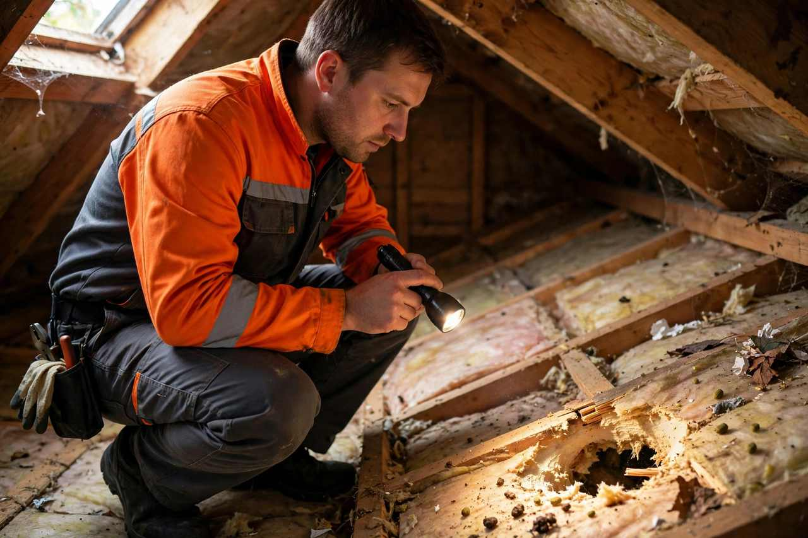

Rodent Control · Nationwide
Rodent Dropping Cleanup That Puts Disinfection Before Everything
Our rodent dropping cleanup soaks every deposit with disinfectant before removal — never dry-swept — with full PPE and sanitized surfaces throughout your home.
30+Rodent services
24/7Emergency service
Same-dayResponse available
Licensed · Upfront options · Written guarantees · Fully insured
On this page
Contents
- Rodent Dropping Cleanup
- What rodent dropping cleanup includes
- Why Homeowners Choose Murvo Rodent Control
- Rodent Control Services Across the United States
- Trusted by Homeowners Nationwide
- Typical Rodent Control Costs — National Ranges
- Sources & Further Reading
- Frequently Asked Questions
- Other services we run
- Get Rodent Dropping Cleanup — Flat-Rate & Guaranteed
What's included
What rodent dropping cleanup includes
No dry-sweeping or dry vacuuming, ever
Gloves, respirators and PPE worn throughout
Surface washing and full disinfection after
Droppings assessed to identify species and scale
Findings fed into your removal plan
Our standard
Why Homeowners Choose Murvo Rodent Control
How Murvo handles rodent dropping cleanup — and the standards every visit is held to.
Licensed & Insured
Licensed, insured and background-checked — every rodent dropping cleanup visit is handled by a trained Murvo technician.
Flat-Rate Pricing
Your rodent dropping cleanup price is quoted in writing before we start — flat-rate, with no hourly billing or add-on surprises.
Local Crews
Local crews who understand how rodents behave in properties like yours carry out your rodent dropping cleanup work.
Guaranteed Work
Rodent Dropping Cleanup from Murvo is backed by a written workmanship guarantee, spelled out on your quote.
Nationwide
Rodent Control Services Across the United States
01Rodent ControlFull-service rodent control combining inspection,…↗02Rodent InspectionDetailed rodent inspection covering attics, crawl spaces,…↗03Rodent ExclusionPermanent rodent exclusion sealing gaps, vents, and…↗04Rodent RemovalComplete rodent removal for rats and mice in attics,…↗05Rodent ProofingWhole-home rodent proofing combining sealing, screening,…↗06Rodent Waste CleanupSafe removal of rodent droppings, urine, nesting and…↗07Rodent DisinfectionSanitizing treatment for areas contaminated by rodent…↗08Mice ControlTargeted mice control clearing active infestations…↗09All Rodent ServicesBrowse all 30 specialist services↗10About MurvoLicensed, insured & rodent-only↗11Contact Murvo24/7 dispatch & written quotes↗12Terms of ServiceQuotes, guarantees & your responsibilities↗
Reviews
Trusted by Homeowners Nationwide
4.9★★★★★customer reviews
★★★★★
“Droppings all through the kitchen cabinets. Murvo disinfected before touching anything, cleaned every shelf and found the hole behind the dishwasher.”
MT
Marcus T.verified customer
Review★★★★★
“I had already swept some up before I knew better. They were reassuring, not alarmist, and cleaned the attic droppings properly with respirators.”
SK
Sarah K.verified customer
Review★★★★★
“They used the droppings to work out it was rats, not mice, which changed the whole plan. Thorough cleanup and clear written pricing.”
DL
David L.verified customer
Review Pricing context
Typical Rodent Control Costs — National Ranges
| Service | Typical national range | Notes |
|---|---|---|
| Rodent inspection | $100–$200 | Species ID, entry points, written findings |
| Rodent removal program | $189–$655 (average $396) | Trapping/baiting program for an active infestation |
| Rodent exclusion & proofing | $200–$600 | Sealing entry points with rodent-proof materials |
| Dead rodent removal | $150–$250 | Removal, disinfection and odor treatment |
National benchmark ranges from Angi 2026 cost data (based on 9,458 projects). Murvo does not bill by the visit or the hour: after inspection you get one flat rate in writing, and the price agreed is the price you pay.
FAQs
Frequently Asked Questions
A real dispatcher is available if your question is not answered here.
Call (888) 842-2618 →A handful of fresh droppings can be handled safely: ventilate the room, wear gloves, soak deposits with disinfectant, wait several minutes, then wipe up with disposable towels and bag them. Never sweep or vacuum them dry, and call us for anything extensive or in attics.
Droppings and urine can carry bacteria such as leptospirosis and salmonella, and dried waste may carry hantavirus, which is why disturbing it dry is the main risk. Disinfect-first cleanup with PPE is designed specifically to control that exposure.
Murvo quotes a flat rate in writing after assessing the affected rooms and deposit levels. Angi's 2026 figures — inspections at $100–$200 nationally — are a helpful reference for the assessment that usually accompanies cleanup.
Mouse droppings are small, around 3–6mm, with pointed ends; rat droppings are larger, 10–20mm, and blunter. Our technicians confirm the species during cleanup because it changes the removal and exclusion plan that follows.
Only if rodents are still getting in. That is why cleanup is paired with removal and exclusion sealing, and covered by our written guarantee — fresh droppings after our program means we return to find the missed entry point.
More Services
Other services we run
01Rodent Waste CleanupSafe removal of rodent droppings, urine, nesting and…↗02Rodent DisinfectionSanitizing treatment for areas contaminated by rodent…↗03Rodent InspectionDetailed rodent inspection covering attics, crawl spaces,…↗04Rodent RemovalComplete rodent removal for rats and mice in attics,…↗05Mice ControlTargeted mice control clearing active infestations…↗06Rat ControlFast rat control for roof and Norway rats, combining…↗

Rodent Dropping Cleanup
Get Rodent Dropping Cleanup — Flat-Rate & Guaranteed
Call now for rodent dropping cleanup with a written flat-rate quote and same-day options across the United States.